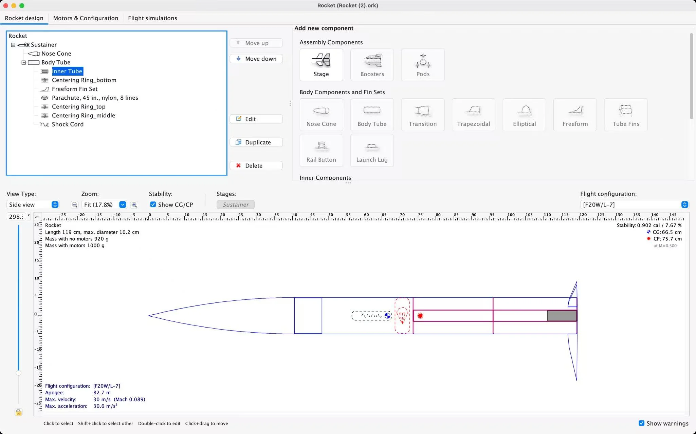
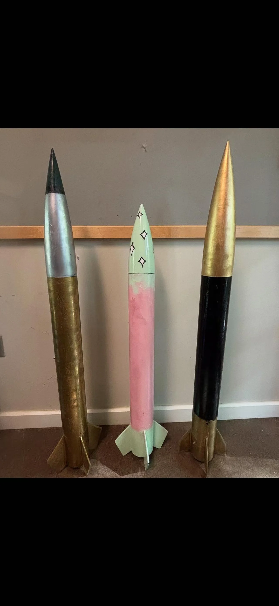
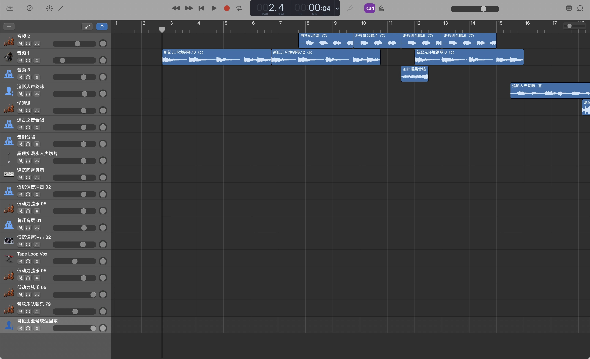

02 / Projects
Ideas,
made real.
Science films, a model rocket, and music built one layer at a time.

Nebula Mind / Science film
Gravity vs. Expansion
Why the universe expands despite gravity.

Nebula Mind / Science film
When Stars Die
Stellar death, cosmic cycles, and what remains.

Nebula Mind / Science film
The Dark Night Sky
Olbers’ paradox and an expanding universe.

Nebula Mind / Science film
The Sun’s Fire
How nuclear fusion powers our nearest star.

Nebula Mind / Science film
The Arrow of Time
Entropy, causality, and why time moves forward.
Physics & Engineering Club
From model
to matter.
A 1.2-meter team project.
Design, build, test, revise.


Inspect the design

See the buildsTest & revise
Recovery matters.
Across five launches, our team revised the parachute system and improved recovery success from 60% to 80%.
Music / Selected arrangement
Napoleon’s
roar.
Piano, strings, choir, and electronic textures, arranged in GarageBand.
One project from a collection of 20 original tracks, including 10 scores for science media.
Listen to the full track
3:06
Explore the arrangement04Peer research
Mentoring
I help peers turn an interest in astrophysics into a research question, using scientific literature, public datasets and discussion.